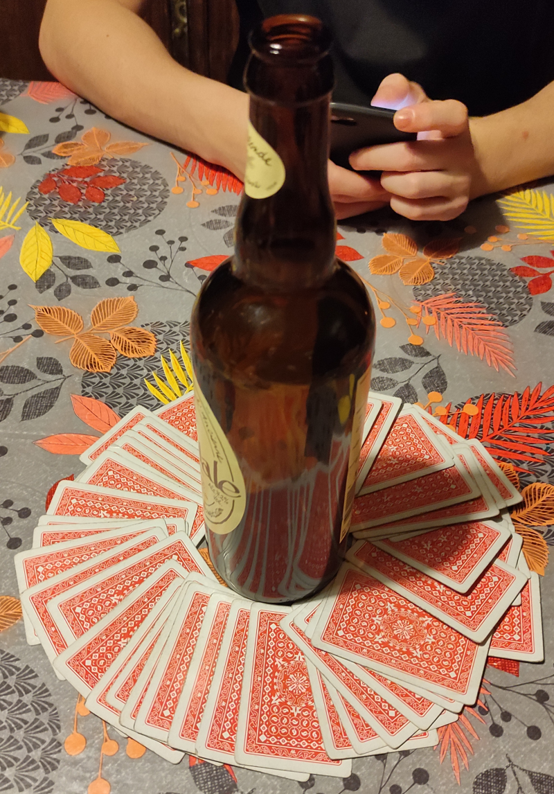

Palmier

Présentation
2 ou plus
20 minutes
4/10
-
1 paquet de 52 cartes
(sans joker) - 1 bouteille
Chance et adresse sont les maîtres mots d'un palmier réussi. Prenez une carte, appliquez son effet puis placez la sur le dessus de la bouteille.
Préparation
- Désignez un RJ.
- Le RJ place la bouteille au centre de la zone de jeu.
- Le RJ mélange les cartes et les place face cachée autour de la bouteille de façon à former un cercle.
- Designez un 1er joueur.
- Vous êtes prêt à jouer.
Règles
Pendant son tour, un joueur doit prendre une carte autour de la bouteille, la révéler et appliqué son effet.
Les joueurs jouent à tour de rôle en commençant dans le sens horaire et jusqu'à ce qu'il n'y ai plus de cartes autour de la bouteille.
Les effets des cartes sont les suivants :
Le joueur rejoue.
Le joueur devient le nouveau maître des pouces.
Le joueur devient le nouveau maître des freezes.
Le joueur choisit un nombre de gorgées que tout le monde doit boire (lui compris).
Le joueur invente une règle.
Le joueur boit cul-sec.
Pour le reste des cartes (de à ) les effets sont les suivants :
Si la carte est de couleur noire ( ou )
Le joueur boit un nombre de gorgées égal à la valeur de la carte.
Si la carte est de couleur rouge ( ou )
Le joueur distribue un nombre de gorgées égal à la valeur de la carte.
Une fois l'effet appliqué, le joueur doit poser cette carte sur le dessus de la bouteille avec 2 coins de celle-ci dans le vide.
Si la carte posée n'a pas 2 coins dans le vide, le joueur doit la reprendre et la reposer en suivant cette règle.
Lorsqu'un joueur fait tomber ne serait-ce qu'une carte d'au dessus de la bouteille, ces cartes sont retirées du jeu et le joueur responsable de cette chute boit cul-sec.
Attention, un coup dans la table, un souffle, prendre la main d'un autre joueur, lancer un objet, ouvrir une fenêtre qui ferait courant d'air immédiat ou tout autres raisons indirectes qui ferait tomber les cartes feront boire le responsable de cet acte !
Changement de sens
Si vous changiez de joueur dans le sens horaire, changez désormais de joueur dans le sens anti-horaire et inversement.
Chapeau
Le dernier joueur à toucher ses doigts avec ses 2 mains au dessus se tête en disant le mot "chapeau" boit 1 gorgée.
Maître des pouces
N'importe quand durant le jeu, le maître des pouces à le droit de poser 1 de ses pouces en évidance sur son frond, sur son menton ou sur la table, ce qui lance une session de pouce. (En évidance signifit que l'on doit comprendre clairement de quoi il s'agit et qu'il faut que ce soit visible de tous, il est tout de même possible de faire ça discrètement tant que l'évidance est respéctée)
Tous les autres joueurs doivent alors faire de même, le dernier joueur à le faire boit 1 gorgée puis la session de pouce s'arrête.
Il ne peut y avoir qu'un seul maître des pouces en même temps.
Si il aucun joueur n'était le maître des pouces avant, félicitations, vous êtes le 1er.
Si il un joueur était le maître des pouces avant, vous prennez immédiatement sa place.
Maître des freezes
N'importe quand durant le jeu, le maître des freezes à le droit de dire le mot "freeze" de manière évidante, ce qui lance une session de freeze. (De façon évidante signifit que l'on doit l'entendre clairement et distinctement et pas en plein milieu d'une de ses phrases)
Tous les autres joueurs doivent alors s'arrêter de bouger et de parler.
Si un joueur bouge, la session de freeze s'arrête puis il boit 1 gorgée.
Le maître des freezes à le droit de dire le mot "défreeze" de manière évidante afin de mettre fin à la session de freeze.
Rien ne se passe si le maître des freezes dit "freeze" alors qu'une session de freeze est déjà en cours.
Rien ne se passe si le maître des freezes dit "défreeze" alors qu'aucune session de freeze n'est en cours.
Il ne peut y avoir qu'un seul maître des freezes en même temps.
Si il aucun joueur n'était le maître des freezes avant, félicitations, vous êtes le 1er.
Si il un joueur était le maître des freezes avant, vous prennez immédiatement sa place.
Variantes
Il existe une variante complète du jeu :
• Lorsqu'un joueur prend une carte et fait un trou dans le cercle de cartes autour de la bouteille, celui-ci boit 4 avant de refermer le trou puis continue de jouer en appliquant l'effet de la carte prise.
Le joueur boit 2 gorgées.
Le joueur boit 3 gorgées.
Le joueur distribue 5 gorgées.
Le joueur distribue 6 gorgées.
Dans ma valise.
J'ai déjà, je n'ai jamais.
Maître de la question.
(Vous pouvez bien entendu jouer avec chacun de ces points indépendamment)
Vous pouvez jouer sans aucun effet de cartes.
Anecdotes
Aucune anecdote particulière sur ce jeu...